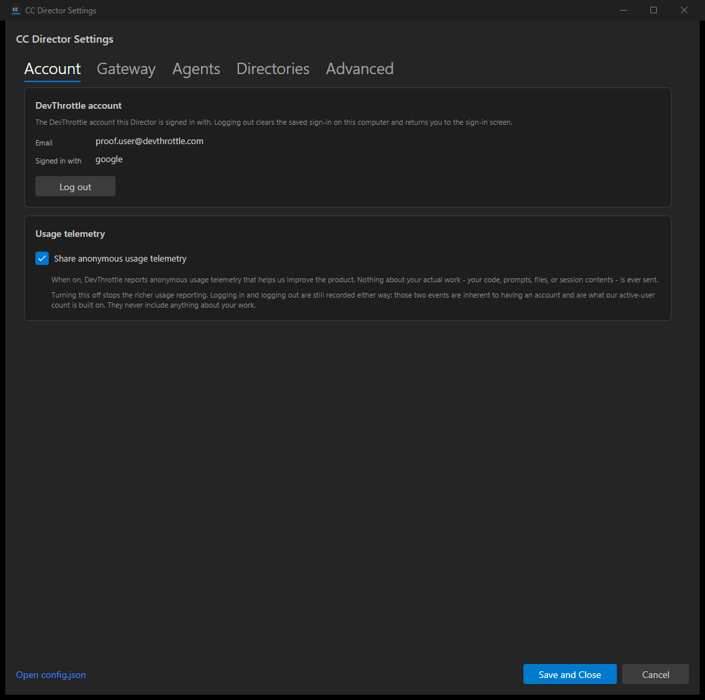
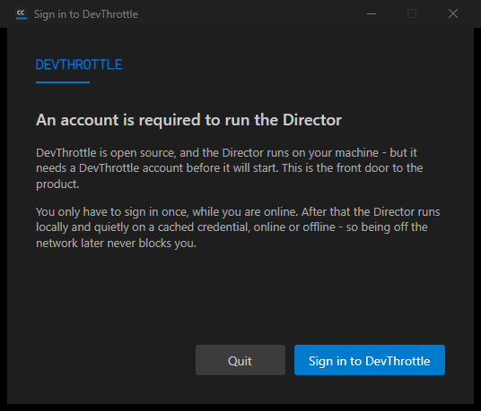

JwtIdentityReader decodes the Supabase-shaped access-token
payload (the email claim and app_metadata.provider) entirely locally;
DevThrottleAccountService.GetIdentity() surfaces it. Returns null (an explicit
"Not available" state) when no credential is stored or the email claim is absent - no fabricated
identity.DevThrottleAccountService.Logout() from #583), then returns the Director to the
account gate (#580) in-process. Because the main window's close is wired to shut the whole
Director down by design, the swap shows the gate as the new main window and hides the old
windows rather than closing them, so the process stays up on the gate.TelemetrySettings persists telemetry.enabled
in config.json (default on) via the non-lossy CcDirectorConfigService.MergePatch.
UsageTelemetry.Record(...) gates the richer usage path on that flag; the always-on
authentication floor (AuthEventLog) records login/logout regardless. Telemetry is
greenfield - this introduces the flag, the always-on floor's separation, the gate on the richer
path, and a local usage sink that proves the gate (the server-side pipeline is the internal-repository child).| Criterion | Result | Proof |
|---|---|---|
| AC1 - Account area shows the signed-in identity (email and provider) for a stored credential. | PASS | Screenshot 01-account-tab-identity-and-telemetry.png shows email
proof.user@devthrottle.com and provider google. Log line:
[JwtIdentityReader] Read: identity resolved (provider=google),
[DevThrottleAccountService] GetIdentity: ... (no network call). |
| AC2 - Log out clears the credential store and records a logout event; the next start shows the gate. | PASS | After clicking Log out (and confirming), the credential blob is gone
(credential blob exists: False) and a logout event is appended to the
auth log. The app returns to the gate in-process (screenshot
02-gate-after-logout.png). A fresh start with no credential decides
Block and shows the gate again - see director-log-excerpts.txt:
IsLoggedIn: no stored credential -> false,
Decide: loggedIn=False, decision=Block,
Startup blocked by account gate ... gate screen shown, main window not reached. |
| AC3 - Telemetry toggle defaults on, persists to config.json under a settings key, reads back after a restart. | PASS | The toggle renders checked by default (screenshot 01). Turning it off and saving wrote
"telemetry": { "enabled": false } to config.json. A subsequent fresh
Director launch read it back: [TelemetrySettings] IsEnabled: persisted value enabled=False.
Harness telemetry-gate-output.txt shows default True, persisted False
read back on a fresh read, and the config.json block. |
| AC4 - With the toggle off, the richer usage reporting does not fire while login/logout still do. | PASS | Harness telemetry-gate-output.txt: with the toggle OFF,
UsageTelemetry.Record returns False and writes nothing to the usage sink, while the
authentication floor still records 2 events (logged-in + logout); with the toggle ON,
UsageTelemetry.Record returns True and the richer event is written. Also covered by
unit tests UsageTelemetryTests. |
| AC5 - The toggle copy is honest about what is always recorded versus what the toggle controls. | PASS | Screenshot 01 shows the copy: "Nothing about your actual work - your code, prompts, files, or session contents - is ever sent" and "Logging in and logging out are still recorded either way: those two events are inherent to having an account and are what our active-user count is built on." |
Identity (email + provider), Log out action, telemetry toggle checked by default, and the honest copy.

After Log out, the Director returns to the account gate in-process (and the same gate is shown on the next start because the credential is cleared).

All 74 tests in CcDirector.Core.Tests Account namespace pass. New tests:
JwtIdentityReaderTests (4), UsageTelemetryTests (4),
TelemetrySettingsTests (4), and two GetIdentity cases added to
DevThrottleAccountServiceTests.
Passed! - Failed: 0, Passed: 74, Skipped: 0, Total: 74 - CcDirector.Core.Tests.dll (net10.0)
The change stays within the existing core_services (CcDirector.Core) and
avalonia_ui (CcDirector.Avalonia) containers. It adds a configuration key
(telemetry.enabled) and a local usage sink; no new container, no architecture drift. No
security rule is violated: the usage sink and the auth-event log record only an event name/kind and a
timestamp - never the access/refresh token (DT-05) and nothing about the user's work; the identity
reader is local-only. The architecture manifest (last_updated 2026-06-21) and security profile
(last_verified 2026-06-09, within the 30-day threshold) are current and unchanged.
I believe this is finished. Every acceptance criterion is implemented, the solution builds clean with zero warnings, all Account unit tests pass, and each criterion is proven in the running Director with screenshots, logs, and the telemetry gate harness committed here.